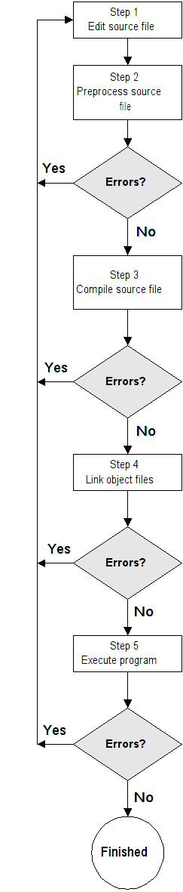
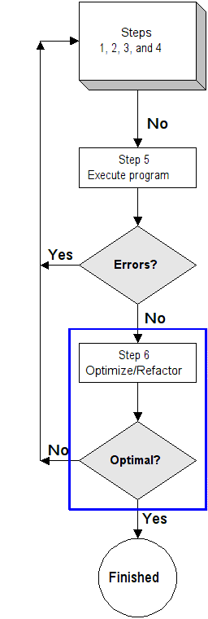
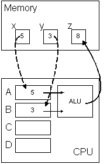
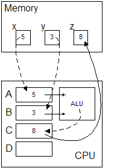

"Anyone can write code which a machine can understand - the trick is to write code which another human can understand." -- Martin Fowler
Introduction
First C Programs (The Chicken and The Egg)
include files
function declarations (prototypes)
function definitions (implentations)
data declarations/definitions (global)
main function header
{
data declarations/definitions (local)
statements
}
other functions
int main(void)
{
}
int main(void)
{
return 0;
}
Students that think that int main(void) can be changed to int main() are required to read this, as I'm not going to spend any more time on it. (Yes, I know that our textbook interchanges them, but you shouldn't.)
A second program in C that actually does something:
#include <stdio.h>
/* Say hi to the world */
int main(void)
{
printf("Hello, World!\n");
return 0;
}
Adding line numbers for clarity. They are not (and cannot be) present in the actual code.Hello, World!
1. #include <stdio.h>
2.
3. /* Say hi to the world */
4. int main(void)
5. {
6. printf("Hello, World!\n");
7. return 0;
8. }
Editing, Preprocessing, Compiling, Linking, and Executing
Edit/Preprocess/Compile/Execute Loop Edit/Preprocess/Compile/Execute Loop Extended  
Contrasting Languages at 3 Levels
Let's say we have 4 variables (just like in algebra), where a = 1, b = 2, c = 3, d = 4. We want to set a fifth one, e, to ab(c + d). We can rewrite the multiplication explicitly as
a ⋅ b ⋅ (c + d)This will result in e having the value 14.
int a = 1; int b = 2; int c = 3; int d = 4; int e = a * b * (c + d);
| Assembly language (compiler-generated) | Same Assembly language with comments |
|---|---|
_main proc far mov word ptr [bp-2],1 mov word ptr [bp-4],2 mov word ptr [bp-6],3 mov word ptr [bp-8],4 mov ax,word ptr [bp-2] imul word ptr [bp-4] mov dx,word ptr [bp-6] add dx,word ptr [bp-8] imul dx mov word ptr [bp-10],ax _main endp |
|
Hand-coded assembler (32-bit 80386 using GNU's assembler, comments start with # and are in bold)
Here are two other assembler samples output from Microsoft's compiler and GNU's compiler..section .data a: .long 1 b: .long 2 c: .long 3 d: .long 4 e: .long .section .text .globl _start _start: movl a, %eax # a -> %eax movl b, %ebx # b -> %ebx imull %eax, %ebx # a * b -> %ebx movl c, %eax # c -> %eax movl d, %ecx # d -> %ecx addl %eax, %ecx # c + d -> %ecx imull %ebx, %ecx # (a * b) * (c + d) -> %ecx movl %ecx, e # put result in e
| Hexadecimal dump (base 16) | Octal dump (base 8) |
|---|---|
014c 0003 0000 0000 0110 0000 000c 0000 0000 0104 742e 7865 0074 0000 0000 0000 0000 0000 0070 0000 008c 0000 00fc 0000 0000 0000 0002 0000 0020 6000 642e 7461 0061 0000 0000 0000 0000 0000 0000 0000 0000 0000 0000 0000 0000 0000 0000 0000 0040 c000 622e 7373 0000 0000 0000 0000 0000 0000 0000 0000 0000 0000 0000 0000 0000 0000 0000 0000 0080 c000 8955 83e5 18ec e483 b8f0 0000 0000 c083 830f 0fc0 e8c1 c104 04e0 4589 8be8 e845 00e8 0000 e800 0000 0000 45c7 01fc 0000 c700 f845 0002 0000 45c7 03f4 0000 c700 f045 0004 0000 458b 89fc 0fc2 55af 8bf8 f045 4503 0ff4 c2af 4589 b8ec 0000 0000 c3c9 9090 9090 9090 9090 9090 9090 9090 0021 0000 000b 0000 0014 0026 0000 0009 0000 0014 662e 6c69 0065 0000 0000 0000 fffe 0000 0167 6973 706d 656c 632e 0000 0000 0000 0000 0000 6d5f 6961 006e 0000 0000 0000 0001 0020 0002 742e 7865 0074 0000 0000 0000 0001 0000 0103 0062 0000 0002 0000 0000 0000 0000 0000 0000 642e 7461 0061 0000 0000 0000 0002 0000 0103 0000 0000 0000 0000 0000 0000 0000 0000 0000 622e 7373 0000 0000 0000 0000 0003 0000 0103 0000 0000 0000 0000 0000 0000 0000 0000 0000 5f5f 6d5f 6961 006e 0000 0000 0000 0020 0102 0000 0000 0000 0000 0000 0000 0000 0000 0000 5f5f 6c61 6f6c 6163 0000 0000 0000 0000 0002 0004 0000 |
000514 000003 000000 000000 000420 000000 000014 000000 000000 000404 072056 074145 000164 000000 000000 000000 000000 000000 000160 000000 000214 000000 000374 000000 000000 000000 000002 000000 000040 060000 062056 072141 000141 000000 000000 000000 000000 000000 000000 000000 000000 000000 000000 000000 000000 000000 000000 000000 000100 140000 061056 071563 000000 000000 000000 000000 000000 000000 000000 000000 000000 000000 000000 000000 000000 000000 000000 000000 000200 140000 104525 101745 014354 162203 134360 000000 000000 140203 101417 007700 164301 140404 002340 042611 105750 164105 000350 000000 164000 000000 000000 042707 000774 000000 143400 174105 000002 000000 042707 001764 000000 143400 170105 000004 000000 042613 104774 007702 052657 105770 170105 042403 007764 141257 042611 134354 000000 000000 141711 110220 110220 110220 110220 110220 110220 110220 000041 000000 000013 000000 000024 000046 000000 000011 000000 000024 063056 066151 000145 000000 000000 000000 177776 000000 000547 064563 070155 062554 061456 000000 000000 000000 000000 000000 066537 064541 000156 000000 000000 000000 000001 000040 000002 072056 074145 000164 000000 000000 000000 000001 000000 000403 000142 000000 000002 000000 000000 000000 000000 000000 000000 062056 072141 000141 000000 000000 000000 000002 000000 000403 000000 000000 000000 000000 000000 000000 000000 000000 000000 061056 071563 000000 000000 000000 000000 000003 000000 000403 000000 000000 000000 000000 000000 000000 000000 000000 000000 057537 066537 064541 000156 000000 000000 000000 000040 000402 000000 000000 000000 000000 000000 000000 000000 000000 000000 057537 066141 067554 060543 000000 000000 000000 000000 000002 000004 000000 |
| Binary dump (base 2) |
|---|
01001100000000010000001100000000000000000000000000000000000000000001000000000001000000000000000000001100000000000000000000000000 00000000000000000000010000000001001011100111010001100101011110000111010000000000000000000000000000000000000000000000000000000000 00000000000000000000000000000000011100000000000000000000000000001000110000000000000000000000000011111100000000000000000000000000 00000000000000000000000000000000000000100000000000000000000000000010000000000000000000000110000000101110011001000110000101110100 01100001000000000000000000000000000000000000000000000000000000000000000000000000000000000000000000000000000000000000000000000000 00000000000000000000000000000000000000000000000000000000000000000000000000000000000000000000000000000000000000000000000000000000 01000000000000000000000011000000001011100110001001110011011100110000000000000000000000000000000000000000000000000000000000000000 00000000000000000000000000000000000000000000000000000000000000000000000000000000000000000000000000000000000000000000000000000000 00000000000000000000000000000000000000000000000000000000000000001000000000000000000000001100000001010101100010011110010110000011 11101100000110001000001111100100111100001011100000000000000000000000000000000000100000111100000000001111100000111100000000001111 11000001111010000000010011000001111000000000010010001001010001011110100010001011010001011110100011101000000000000000000000000000 00000000111010000000000000000000000000000000000011000111010001011111110000000001000000000000000000000000110001110100010111111000 00000010000000000000000000000000110001110100010111110100000000110000000000000000000000001100011101000101111100000000010000000000 00000000000000001000101101000101111111001000100111000010000011111010111101010101111110001000101101000101111100000000001101000101 11110100000011111010111111000010100010010100010111101100101110000000000000000000000000000000000011001001110000111001000010010000 10010000100100001001000010010000100100001001000010010000100100001001000010010000100100001001000000100001000000000000000000000000 00001011000000000000000000000000000101000000000000100110000000000000000000000000000010010000000000000000000000000001010000000000 00101110011001100110100101101100011001010000000000000000000000000000000000000000000000000000000011111110111111110000000000000000 01100111000000010111001101101001011011010111000001101100011001010010111001100011000000000000000000000000000000000000000000000000 00000000000000000000000000000000010111110110110101100001011010010110111000000000000000000000000000000000000000000000000000000000 00000001000000000010000000000000000000100000000000101110011101000110010101111000011101000000000000000000000000000000000000000000 00000000000000000000000100000000000000000000000000000011000000010110001000000000000000000000000000000010000000000000000000000000 00000000000000000000000000000000000000000000000000000000000000000000000000000000001011100110010001100001011101000110000100000000 00000000000000000000000000000000000000000000000000000010000000000000000000000000000000110000000100000000000000000000000000000000 00000000000000000000000000000000000000000000000000000000000000000000000000000000000000000000000000000000000000000010111001100010 01110011011100110000000000000000000000000000000000000000000000000000000000000000000000110000000000000000000000000000001100000001 00000000000000000000000000000000000000000000000000000000000000000000000000000000000000000000000000000000000000000000000000000000 00000000000000000101111101011111010111110110110101100001011010010110111000000000000000000000000000000000000000000000000000000000 00100000000000000000001000000001000000000000000000000000000000000000000000000000000000000000000000000000000000000000000000000000 00000000000000000000000000000000000000000000000001011111010111110110000101101100011011000110111101100011011000010000000000000000 00000000000000000000000000000000000000000000000000000010000000000000010000000000000000000000000011111111 |
Now, which language would you rather work with?
Simple calculation:
Simplified view at runtime showing 3 variables in memory, a CPU with 4 registers and an Arithmetic-Logic Unit:int x = 5; int y = 3; int z = x + y;
Assembly code (generated by the GNU C compiler, comments added):
 or possibly like this: 
movl $5, -12(%rbp) ; put 5 into memory location x movl $3, -8(%rbp) ; put 3 into memory location y movl -12(%rbp), %eax ; put contents of x into eax register movl -8(%rbp), %ebx ; put contents of y into ebx register addl %ebx, %eax ; add ebx and eax registers, put result in eax register movl %eax, -4(%rbp) ; put contents of eax register into memory location z
Hopefully, you can see why people prefer to program in C rather than assembly. The end result is the same, but the amount of effort required from the C programmer is significantly less.
Putting It All Together
Create a text file for this C code named simple.c. The size of this file is about 120 bytes (although this depends on the operating system and the type of whitespace used). You can use any text editor like, such as Notepad++ (Windows only) or Geany (Windows, OS X, Linux, and others).int main(void) { int a = 1; int b = 2; int c = 3; int d = 4; int e = a * b * (c + d); return 0; }
The source code (text) is compiled into object or machine code (binary) and saved in a file named simple.o. The size of this file will probably be between 500 and 2000 bytes (depends on the compiler, version, and options used). Usinggcc -c simple.c -o simple.o
The object file is linked (combined) with other object code and saved in a file named simple.exe. (The .exe is a Windows requirement as other operating systems don't require it.) The size of this file is going to be tens of thousands of bytes. (Again, depends on the compiler.)gcc simple.o -o simple.exe
Run the executable file by simply typing the name of the executable file (providing the .exe extension when executing it is optional under Windows):Of course, nothing appears to happen. The program did run and it did perform the calculations. There just aren't any instructions in the program that display anything for you to see.simple
We can modify it to use the printf (print formatted) function and display the value of e after the calculations:
#include <stdio.h> /* printf */
/* Calculate some values */
int main(void)
{
int a = 1;
int b = 2;
int c = 3;
int d = 4;
int e = a * b * (c + d);
/* Display the result as an integer value */
printf("%i\n", e);
return 0;
}
Step-by-Step
The commands above were really shortcuts for the entire process. Let's look at each step individually to gain a clearer understanding of what is actually taking place. Remember that the C programming language (and all of its associated tools) are case sensitive. 99% of the time, everything should be in lowercase. Exceptions will be noted below.
From the command line, invoke a text editor (e.g. notepad++) and create/edit the source file:Just type the code above (or copy/paste) and save the file.notepad++ simple.c
The output file (simple.i) contains the original source code, plus a lot of code from the stdio.h header file. The -o option tells cpp what to name the output file. The output file, simple.i must follow immediately after the -o option. (The file extension .i is the conventional way to name a preprocessed file.)cpp simple.c -o simple.iNote: The cpp command above stands for C pre-processor, NOT C plus plus.
Use the GNU C compiler, gcc, to translate the preprocessed file into assembly code.Notes:gcc -fpreprocessed -S simple.i -o simple.s
- The -fpreprocessed option tells gcc not to run the preprocessor because the file has already been preprocessed.
- The -S option (that's an uppercase 'S') tells gcc to only produce an assembly file instead of creating an object file.
- The -o option tells gcc what to name the output file. The output file, simple.s must follow immediately after this option. (The file extension .s is the conventional way to name an assembly file.)
Use the GNU assembler (as) to assemble/convert the assembly file to object code.The -o option tells the assembler, as, to name the object file simple.o (The file extension .o is the conventional way to name an object file.) To view the disassembled code, use either of these:as simple.s -o simple.oobjdump -d simple.o dumpbin /disasm simple.o
Use the GNU linker, ld (that's a lowercase 'L'), to link the object file with code from the standard libraries and create an executable named simple.exeDo NOT copy and paste the text below. The command that you type must be on a single line and the text below is broken into multiple lines. This link here: linker command on one line, has the command as one long line. Copy that text instead.
Notes:ld -plugin C:/mingw64/bin/../libexec/gcc/x86_64-w64-mingw32/8.1.0/liblto_plugin-0.dll -plugin-opt=C:/mingw64/bin/../libexec/gcc/x86_64-w64-mingw32/8.1.0/lto-wrapper.exe -plugin-opt=-pass-through=-lmingw32 -plugin-opt=-pass-through=-lgcc -plugin-opt=-pass-through=-lgcc_eh -plugin-opt=-pass-through=-lmoldname -plugin-opt=-pass-through=-lmingwex -plugin-opt=-pass-through=-lmsvcrt -plugin-opt=-pass-through=-lpthread -plugin-opt=-pass-through=-ladvapi32 -plugin-opt=-pass-through=-lshell32 -plugin-opt=-pass-through=-luser32 -plugin-opt=-pass-through=-lkernel32 -plugin-opt=-pass-through=-liconv -plugin-opt=-pass-through=-lmingw32 -plugin-opt=-pass-through=-lgcc -plugin-opt=-pass-through=-lgcc_eh -plugin-opt=-pass-through=-lmoldname -plugin-opt=-pass-through=-lmingwex -plugin-opt=-pass-through=-lmsvcrt --sysroot=C:/mingw710/x86_64-710-posix-seh-rt_v5-rev1/mingw64 -m i386pep -Bdynamic C:/mingw64/bin/../lib/gcc/x86_64-w64-mingw32/8.1.0/../../../../x86_64-w64-mingw32/lib/../lib/crt2.o C:/mingw64/bin/../lib/gcc/x86_64-w64-mingw32/8.1.0/crtbegin.o -LC:/mingw64/bin/../lib/gcc/x86_64-w64-mingw32/8.1.0 -LC:/mingw64/bin/../lib/gcc -LC:/mingw64/bin/../lib/gcc/x86_64-w64-mingw32/8.1.0/../../../../x86_64-w64-mingw32/lib/../lib -LC:/mingw64/bin/../lib/gcc/x86_64-w64-mingw32/8.1.0/../../../../lib -LC:/mingw64/bin/../lib/gcc/x86_64-w64-mingw32/8.1.0/../../../../x86_64-w64-mingw32/lib -LC:/mingw64/bin/../lib/gcc/x86_64-w64-mingw32/8.1.0/../../.. simple.o -lmingw32 -lgcc -lgcc_eh -lmoldname -lmingwex -lmsvcrt -lpthread -ladvapi32 -lshell32 -luser32 -lkernel32 -liconv -lmingw32 -lgcc -lgcc_eh -lmoldname -lmingwex -lmsvcrt C:/mingw64/bin/../lib/gcc/x86_64-w64-mingw32/8.1.0/crtend.o -o simple.exe
- The exact command will depend on the version and location of the GCC C compiler on your computer. (This example is using version 8.1.0 of the compiler which is installed in C:\mingw64.)
- This command is Windows-specific and is different on other operating systems.
- You will rarely, if ever, need to type this cryptic line manually. (I've only done it once in my long career, and it was for this example!)
- The output shown from simple.c (simple.i simple.s, simple.o, and simple.exe) was generated under Linux using version 7.1.0 of the GCC C compiler. The output generated from Mac OS X and Windows would not be exactly the same, but would be similar.
- You can clearly see why some files are called text files and others are called binary files.
At the command prompt you just need to type the name of the executable file. On Windows type:orsimpleOn Mac or Linux type (or if you're using the Windows Power Shell):simple.exeUsually, you don't need to supply the .exe file extension. The linker will add that automatically (on Windows) and leave it off for Mac and Linux. By omitting the extension:./simplethe linker will "do the right thing" based on the operating system.-o simple
and that will perform all of the steps above.gcc simple.c -o simple
To enable the compiler to perform a more thorough check of your source code, use the -Wall command line option like so:Now, if the compiler detects any potential problems or misuse of the C language, it will alert you with a warning message. For example, if I add the variable f like this:gcc -Wall -c simple.c -o simple.oI get this warning from the compiler:int a = 1; int b = 2; int c = 3; int d = 4; int f = 5; /* Add this variable, but don't use it anywhere */ int e = a * b * (c + d); printf("%i\n", e); return 0;or, if I add something like this:simple.c: In function 'main': simple.c:10: warning: unused variable 'f'I get this warning from the compiler:a + b - c; /* Perform some calculation, but discard the value */simple.c: In function 'main': simple.c:11: warning: statement with no effect
If you want to perform both compile and link steps with one command, don't provide the -c option. This will compile and then link the program:However, if the compile step fails for any reason, the link step is skipped.gcc simple.c -o simple.exe
If you want to generate the assembly output as above, use -S option:Note:This will produce a text file called simple.s which you can view with any text editor.gcc -S simple.cIf you want to generate the preprocessor output directly from gcc, use -E option:
This will produce a ton of information to the screen. To capture the output so you can view it more easily, redirect the output to a file:gcc -E simple.cThegcc -E simple.c > simple.outcauses the output to be written to a file (named simple.out) instead of to the screen. This file is a text file that you can view with any text editor.> simple.out
The compiler will verify that this code is valid, legal C code, although it is incorrect:Modern compilers have two primary goals:
1. To verify that your code is valid C code
2. To convert/translate the C (text) code into machine (binary) code
#include <stdio.h>
#define PI 3.1415926
int main(void)
{
int radius = 2;
double volume = 4 / 3 * PI * radius * radius * radius;
printf("The volume of a sphere with radius %i is %f\n", radius, volume);
return 0;
}
but the actual output is33.510321
As far as the compiler is concerned, there is nothing wrong with the code. But, the use of the data is incorrect. That's because the compiler sees this:25.132741
when it should see this:1 * 3.1415926 * 8
It's kind of like doing this:1.333333 * 3.1415926 * 8
printf("The sum of 3 and 4 is %i\n", 3 - 4);
^^^^^
Oops!
So, the moral of the story is:
Just because your code compiles, (and even runs), doesn't mean it is correct.
Another Example
This example will show constructs such as identifiers, literal constants, defines, expressions, and several others.The C code: marathon.c: (with line numbers for clarity)
1. #include <stdio.h> /* printf */
2.
3. /* Convenient definitions */
4. #define YARDS_PER_MILE 1760
5. #define KILOS_PER_MILE 1.609
6.
7. /* A marathon is 26 miles, 385 yards */
8. /* Prints the distance of a marathon in kilometers */
9. int main(void)
10. {
11. int miles = 26; /* Miles in a marathon */
12. int yards = 385; /* Yards in a marathon */
13. double kilometers; /* Calculated kilometers in a marathon */
14.
15. /* Convert miles and yards into kilometers */
16. kilometers = (miles + (double)yards / YARDS_PER_MILE) * KILOS_PER_MILE;
17.
18. /* Display the result on the screen */
19. printf("A marathon is %f kilometers\n", kilometers);
20.
21. /* Return successful value to OS */
22. return 0;
23. }
24.
Without line numbers (to copy and paste):
#include <stdio.h> /* printf */
/* Convenient definitions */
#define YARDS_PER_MILE 1760
#define KILOS_PER_MILE 1.609
/* A marathon is 26 miles, 385 yards */
/* Prints the distance of a marathon in kilometers */
int main(void)
{
int miles = 26; /* Miles in a marathon */
int yards = 385; /* Yards in a marathon */
double kilometers; /* Calculated kilometers in a marathon */
/* Convert miles and yards into kilometers */
kilometers = (miles + (double)yards / YARDS_PER_MILE) * KILOS_PER_MILE;
/* Display the result on the screen */
printf("A marathon is %f kilometers\n", kilometers);
/* Return successful value to OS */
return 0;
}
The assembly file named marathon.s (generated by: gcc -S marathon.c -o marathon.s)
The code above uses a few arithmetic operators. Many operators correspond with the ones you've seen in algebra. Here are a few binary operators:
A full list of operators including their precedence and associativity.
Operator Meaning + Add - Subtract * Multiply / Divide % Modulo
(Remainder)
Computer Data Storage (Refresher)
This section is just a short refresher on the binary, decimal, and hexadecimal number systems.
0 0000 4 0100 8 1000 C 1100 1 0001 5 0101 9 1001 D 1101 2 0010 6 0110 A 1010 E 1110 3 0011 7 0111 B 1011 F 1111
The number above, 1011101000010101000111100011, translates into hex (BA151E3) and decimal (195,121,635) as:
More information on Binary numbers.
Binary 1011 1010 0001 0101 0001 1110 0011 Hexadecimal B A 1 5 1 E 3 Decimal 195121635
Binary/Decimal converter (BinConverter.exe)
Lexical Conventions
C programs are typically stored in one or more files on the disk. These files are given a rather fancy name: translation units. After the pre-processor has removed the directives and performed the appropriate action, the compiler starts its job. The first thing the compiler needs to do is to parse through all of the tokens in the files.There are different classes of tokens (lexical elements). In no particular order they are:
We will spend the entire course studying these aspects of the C language.
Examples:
Valid Invalid Invalid Reason Doesn't start with a letter or underscore 1. Doesn't start with a letter or underscore
2. $ is illegal character$ is an illegal character - is an illegal character Can't have spaces in identifier names int is a keyword
Good Identifier Names Bad Identifiier Names int rate;
int time;
int distance;
rate = 60;
time = 20;
distance = rate * time;
int x;
int y;
int z;
x = 60;
y = 20;
z = x * y;
#define PI 3.1416F
float radius = 5.25F;
float sphere_volume;
sphere_volume = 4.0F / 3.0F * PI * radius * radius * radius;
#define A 3.1416F
float id1 = 5.25F;
float id2;
id2 = 4.0F / 3.0F * A * id1 * id1 *id1;
double base = 2.75;
double height = 4.8;
double area_of_triangle = 0.5 * base * height;
double table = 2.75;
double chair = 4.8;
double couch = 0.5 * table * chair;
The keywords in red will not be used in this course as they are somewhat more advanced. (The auto keyword is deprecated and shouldn't be used at all. The meaning of auto means something completely different in modern C++. There are also about 92 keywords in C++, which is an enormous language!)
autoconst double float int short struct unsigned break continue else for long signed switch void case default enum goto register sizeof typedef volatile char do extern if return static union while
Also, remember that C is case-sensitive so these keywords must be typed exactly as shown. int is not the same as Int or INT.
Examples:int a = 1; float f = 3.14F; double d = 23.245;
Note that the literal character 'A' is of type int and not char. ('A' is just an alias for the value 65. ASCII chart near the bottom)
Constant Type 5 int 3.14 double 3.14F float 'A' int "hello" string
The marathon.c program has 6 literal values. There are 4 integers, 1 double, and 1 string.
Algorithms
Euclid's algorithm in English (with some algebra thrown in):
How about the numbers 101 and 27?
Here is how we might write the algorithm in pseudo-code:
Euclid's GCD algorithm as high-level computer programs
(assuming that m and n are integers and already have values and that m > n)
The algorithm reprinted:
Notice that in Step 3 there are two different possibilities. This is typically how algorithms work.
There usually needs to be some terminating condition, otherwise the algorithm (program) runs forever.
Step Actions to be Performed
1
Assign the larger number to M, and the smaller number to N.
2
Divide M by N (M/N) and assign the remainder to R.
3
If R is not 0, then assign the value of N to M, assign the value of R to N, and return to step 2.
If R = 0, then the GCD is N and the algorithm terminates.
Coding this algorithm in an assembler language might look like the code below. This version is using memory
locations that are named M and N for easier understanding.
This second version doesn't use any memory locations (like M and N above). All values are stored directly in the
registers on the CPU.
.section .data
.section .data
.section .text
.globl main
main:
movl $45, %eax # put 45 in eax (M)
movl $0, %edx # set to 0 (high word of divisor)
movl $12, %ecx # put 12 in ecx (N)
idivl %ecx # divide M/N, (%edx:%eax/%ecx)
# result -> %eax, remainder -> %edx
start_loop:
cmpl $0, %edx # Is remainder 0?
je loop_exit # if 0, we're done
movl %ecx, %eax # put N into M
movl %edx, %ecx # put R into N
movl $0, %edx # set high word
idivl %ecx # divide M/N, (%edx:%eax/%ecx)
# result -> %eax, remainder -> %edx
jmp start_loop # continue algorithm
loop_exit:
C/C++/C#/D/Java Perl Python Pascal BASIC
r = m % n;
while (r != 0)
{
m = n;
n = r;
r = m % n;
}
$r = $m % $n;
while ($r != 0)
{
$m = $n;
$n = $r;
$r = $m % $n;
}
r = m % n
while r != 0:
m = n
n = r
r = m % n
r := m Mod n;
While r <> 0 Do
Begin
m := n;
n := r;
r := m Mod n;
End;
r = m MOD n
WHILE r <> 0
m = n
n = r
r = m MOD n
WEND
Step Actions to be Performed
1
Assign the larger number to M, and the smaller number to N.
2
Divide M by N (M/N) and assign the remainder to R.
3
If R is not 0, then assign the value of N to M, assign the value of R to N, and return to step 2.
If R = 0, then the GCD is N and the algorithm terminates.
Another way to state step #3:
While R is not 0, assign the value of N to M, assign the value of R to N, and go to step 2.
If R = 0, then the GCD is N and the algorithm terminates.